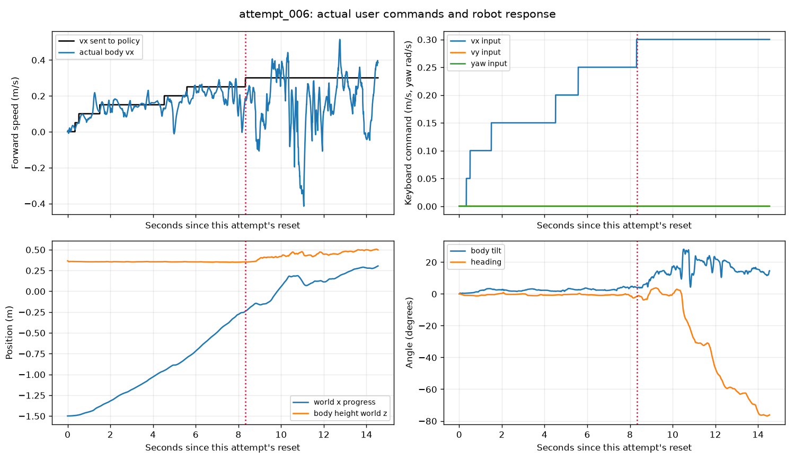
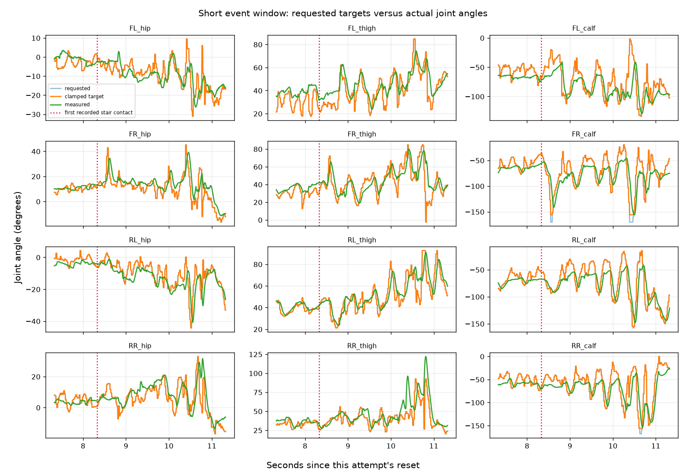
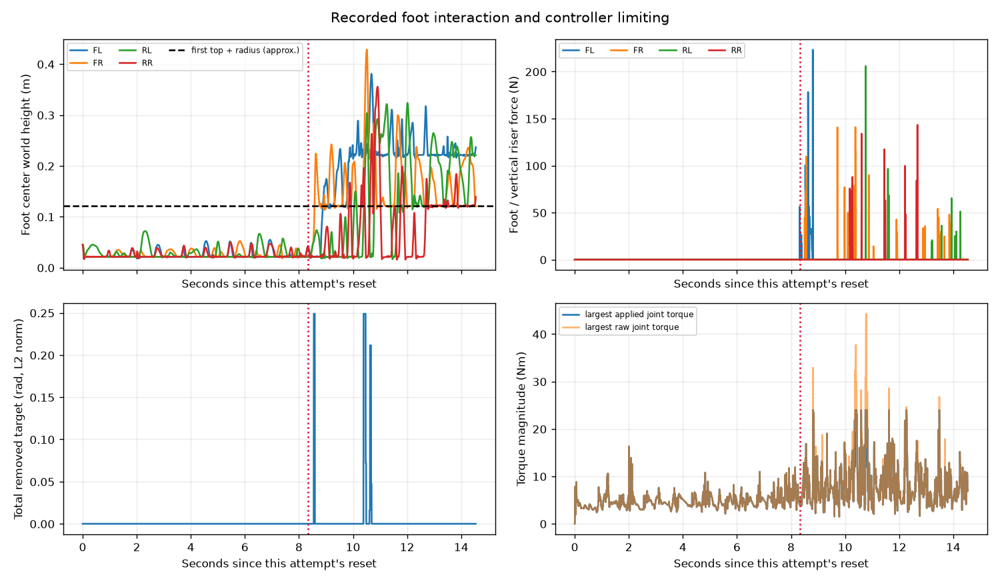

Track 1 (10cm); checkpoint update 90500. These figures read saved data only. No policy or new simulation was run to draw them.
Exact checkpoint, limits and settings · Numbers · Contact data · Your key events
Mean joint 8–30 Hz RMS: 0.776 degrees, calculated over 0.00–14.54 seconds. This includes impacts and useful corrections; it is not proof of a jitter cause or successful ascent.
Black vx is the request actually supplied to the policy. Actual vx is how fast the body moves forward. The keyboard-input panel records all three commands. The request can stay constant because keys change a latched command. Position shows progress/height; tilt shows leaning and heading shows turning.

Requested is before target limiting; clamped target is after limiting; measured is the actual angle. When requested and clamped separate, a limit removes part of the command. When measured differs, the joint has tracking error. Red dotted lines mark first recorded riser/stair contact; no line means none was recorded in the selected interval.

Foot heights and vertical-face forces show when a foot meets a riser. The dashed height is an approximate geometric threshold for the first tread only, not later steps or a dynamic prediction. Removed-target magnitude is not measured jitter. Torque maxima summarize all joints and may refer to different joints at different times; the JSON includes separate clipping fractions. A figure alone does not establish full climbing.
